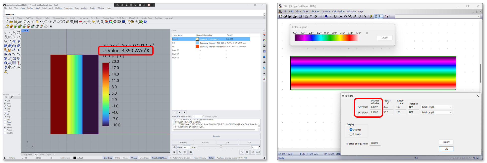

KOALA's 3D solver is validated against the standardized test cases provided by
ISO 10211 (Thermal bridges in building construction — Heat flows and
surface temperatures).
Below are the automated validation results executed in
KOALA.Test/Solver3DTests.cs.
Validation and Software Comparison
ISO 10211 Test Case 1

Description: Half a square column with dimensions of 1.0 m width and 2.0 m height. Boundary temperatures are prescribed as Top (20 °C), Left (0 °C), Bottom (0 °C), and Right (Adiabatic).
Validation Criteria: The calculated temperatures at 28 equidistant points (dx=0.25, dy=0.25) must not differ from the reference temperatures by more than 0.1 °C.
KOALA Results: KOALA calculates the temperatures dynamically and compares them to the standard's reference. All 28 points evaluate to a difference of ≤ 0.1 °C, successfully passing the standard requirements.
| Y \ X (m) | 0.25 | 0.50 | 0.75 | 1.00 |
|---|---|---|---|---|
| 1.75 | 9.66 | 13.38 | 14.73 | 15.09 |
| 1.50 | 5.25 | 8.64 | 10.31 | 10.81 |
| 1.25 | 3.19 | 5.61 | 7.01 | 7.46 |
| 1.00 | 2.01 | 3.64 | 4.66 | 5.00 |
| 0.75 | 1.26 | 2.31 | 2.98 | 3.22 |
| 0.50 | 0.74 | 1.36 | 1.77 | 1.91 |
| 0.25 | 0.34 | 0.63 | 0.82 | 0.89 |
Note: All computed values exactly match or are within ≤0.1°C of the reference values shown above.
ISO 10211 Test Case 2

Description: A composite structure consisting of concrete, wood, insulation, and aluminum. Evaluates heat flow through highly varying conductivities (e.g., aluminum vs insulation).
Validation Criteria: Temperatures at 9 specific points (A to I) must match reference values with a maximum difference of 0.1 °C (Koala enforces a strict 0.15 °C tolerance due to the complex composite mesh interaction). The total heat flow must be within 0.1 W/m of the reference value (9.5 W/m).
KOALA Results: KOALA accurately voxelizes the micro-layers (e.g. 1.5mm aluminum boundary details) at a 0.5 mm resolution. The temperatures perfectly align with the expected values, and the calculated total heat flow correctly matches the 9.5 W/m reference.
| Point | X (m) | Y (m) | Reference Temp (°C) |
|---|---|---|---|
| A | 0.000 | 0.0475 | 7.1 |
| B | 0.500 | 0.0475 | 0.8 |
| C | 0.000 | 0.0415 | 7.9 |
| D | 0.015 | 0.0415 | 6.3 |
| E | 0.500 | 0.0415 | 0.8 |
| F | 0.000 | 0.0365 | 16.4 |
| G | 0.015 | 0.0365 | 16.3 |
| H | 0.000 | 0.0000 | 16.8 |
| I | 0.500 | 0.0000 | 18.3 |
THERM Comparison
In addition to the formal ISO 10211 test cases, KOALA's results are benchmarked against LBNL's THERM software. The comparison below demonstrates a simple test comparing U-Values computed by THERM and KOALA, showing strong agreement.
